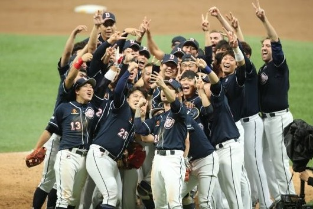
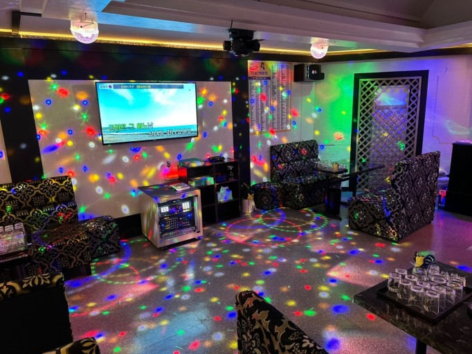
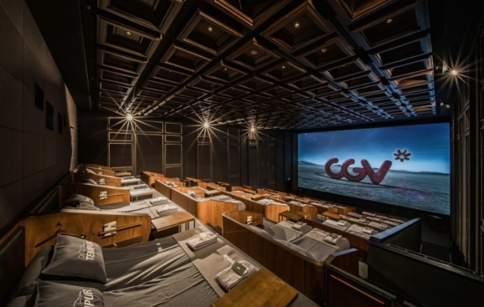

안녕하세요! 제 이름은 박주연입니다.
다른 학교에서 유아교육과를 전공하다가 자퇴하고 명지전문대학교 컴퓨터공학과로 입학하게 된 새내기입니다!
열심히 강의듣고 html최강자가 되겠습니다! 감사합니다!
|  |  |  |
|---|---|---|
| 야구 보기 | 노래 부르기 | 영화 보기 |
| 구분 | 월 | 화 | 수 | 목 | 금 |
|---|---|---|---|---|---|
| 09 | |||||
| 10 | 프로그래밍언어실습 (공학관 603호) |
컴퓨터과학개론 (공학관 507호) |
|||
| 11 | |||||
| 12 | |||||
| 13 | SW개발문제해결능력 (공학관 609호) |
||||
| 14 | 컴퓨팅사고력 (공학관 608호) |
인터넷콘텐츠 (공학관 615호) |
|||
| 15 | |||||
| 16 | |||||
| 17 |